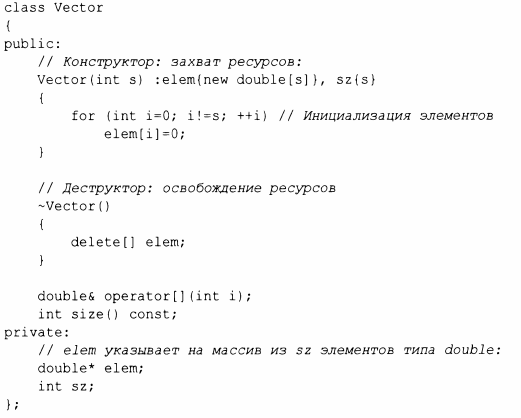
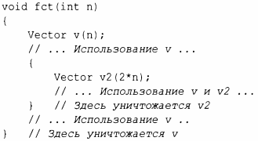
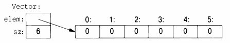

⇐4.2.1 Арифметический тип Содержание 4.2.3 Инициализация контейнеров⇒
Контейнер представляет собой объект, содержащий коллекцию элементов. Мы называем класс Vector контейнером, потому что объекты типа Vector являются контейнерами. Как определено в §2.3, Vector является продуманным контейнером douЫe: он прост для понимания, устанавливает полезный инвариант (§3.5.2), обеспечивает проверку выхода обращения к элементу за диапазон (§3.5.1) и обеспечивает функцию size (),что позволяет выполнять обход его элементов. Однако у него есть фатальный недостаток: он выделяет память для элементов, используя оператор new, но никогда ее не освобождает. Это не очень хорошая идея, потому что, хотя С++ и определяет интерфейс сборщика мусора (§5.3), не гарантируется его наличие для того, чтобы сделать неиспользуемую память доступной для новых объектов. Во многих средах вы не можете использовать сборку мусора, и часто по логическим причинам или из соображений производительности предпочтительнее использовать более точное управление уничтожением объектов. Нам нужен механизм, освобождающий память, выделенную конструктором; таким механизмом является деструктор:
Имя деструктора состоит из оператора дополнения - , за которым следует имя класса; деструктор - это дополнение к конструктору. Конструктор Vector выделяет некоторую память в свободной памяти (именуемой также кучей или динамической памятью) с использованием оператора new [ ] . Деструктор освобождает эту память с помощью оператора delete []. Обычный оператор delete удаляет отдельный объект, delete [] удаляет массив.
Все это делается без вмешательства пользователей класса Vector. Пользователи просто создают и используют объекты Vector так же, как и переменные встроенных типов. Например:
Vector подчиняется тем же правилам именования, области видимости, выделения памяти, времени жизни и так далее (§ 1.5), что и встроенные типы, такие как int и char. Этот Vector представляет собой сильно упрощенный вариант из-за отсутствия обработки ошибок; см. §3.5.
Комбинация конструктора/деструктора является основой многих элегантных технологий. В частности, она является основой большинства методов управления ресурсами в С++ (§5.3, § 13.2). Рассмотрим графическую иллюстрацию Vector.
Конструктор выделяет память для элементов и соответствующим образом инициализирует элементы Vector. Деструктор освобождает память, выделенную для элементов. Эта модель управ.~е11ия данными очень часто используется для управления данными, которые могут изменяться в размерах в процессе жизненного цикла объекта. Методика получения ресурсов в конструкторе и освобождение их в деструкторе известна как идиома "Захват ресурсов есть инициализация" (Resource Acquisition Is lnitialization - RAll) и позволяет избежать операций "с голым new", т.е. избежать выделения памяти в общем коде и сохранить его только в реализациях хорошо ведущих себя абстракций. Аналогично следует избегать "голых операций delete". Все это делает код намного менее подверженным ошибкам и позволяет намного проще избежать утечек ресурсов(§ 13.2).